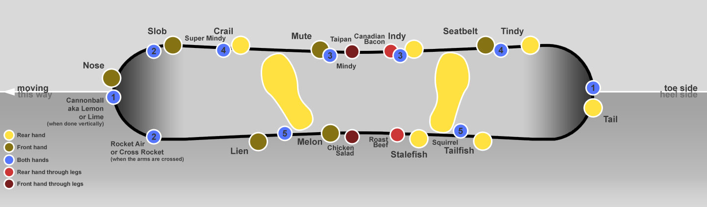

Spins are typically performed in 180° increments due to the nature of the obstacles on which they are performed. Even in cases where spins are performed on unconventional obstacles, the rotation is regarded as the nearest increment of 180°, and can be identified by the direction of approach and landing (regular and switch). A spin attempted from a jump to a rail is the only time a spin can be referred to in a 90 degree increment, examples: 270 (between a 180 and 360 degree spin) or 450 (between a 360 and 540 degree spin). These spins can be frontside, backside, cab, or switch-backside just like any other spins. Billy Morgan landed the biggest spin ever, a quad cork 1800.
The term "Cab" in snowboarding generally refers to any switch-frontside spin (no matter what the amount of rotation) on any feature (halfpipe, jumps, rails, boxes). For example, a "switch-frontside 1080 double cork" off a jump would be referred to as a "cab 1080 double cork". The term was originally only applied to a switch-frontside 360 in a halfpipe in which a rider would take off a wall switch, spin 360 degrees frontside, and land on his/her comfortable stance (regular/goofy). Therefore, the term "Cab" only applied to tricks in the halfpipe in which rotations were in full 360 increments, such as a "Cab 360" or "Cab 720." For example, since a switch-frontside 540 would land a rider in the same switch position he/she took off from in the halfpipe, it was not referred to as a "Cab 540" because the rider did not take off switch, spin frontside, and land in his/her comfortable stance.
A Half-Cab is a switch-frontside 180 spin.
An alley-oop is a spin performed in a halfpipe or quarterpipe in which the spin is rotated in the opposite direction of the air. For example, performing a frontside rotation on the backside wall of a halfpipe, or spinning clockwise while traveling right-to-left through the air on a quarterpipe would mean the spin was alley-oop.
Hard Way: A term used when spinning onto a feature or off a jump using your opposite edge to start the direction of your spin. Example- If a regular rider was to spin Hard Way front side 270 onto rail, they would start that spin off their toe side edge. That would make the trick a Hard Way front side 270. Opposite of the traditional front side rotation starting with your heel edge. Same applies to goofy riders.
A slide performed where the riders leading foot passes over the rail on approach, with his/her snowboard traveling perpendicular along the rail or other obstacle. When performing a frontside boardslide, the snowboarder is facing uphill. When performing a backside boardslide, a snowboarder is facing downhill. This is often confusing to new riders learning the trick because with a frontside boardslide you are moving backward and with a backside boardslide you are moving forward.
A slide performed where the rider's trailing foot passes over the rail on approach, with his/her snowboard traveling perpendicular along the rail or other obstacle. When performing a frontside lipslide, the snowboarder is facing downhill. When performing a backside lipslide, a snowboarder is facing uphill.
A fundamental trick performed by grabbing the toe edge between the bindings with the trailing hand. This trick is referred to as a frontside grab on a straight air, or while performing a frontside spin. When performing a backside aerial or backside rotation, this grab is referred to as an Indy. The frontside air was popularized by skateboarder Tony Alva.
Front hand grabs the toe edge between the bindings. Variations include the Mute Stiffy, in which a mute grab is performed while straightening both legs, or alternatively, some snowboarders will grab mute and rotate the board frontside 90 degrees.
A melon grab where the rider bones the front leg and turns the board the 45° angle.
Back hand grabs the heel edge of the board between the feet, around the outside of the knee.
Front hand grabs the nose of the board.
The trailing hand grabs the tail of the board. Variations include straightening, or 'boning' the front leg, or 'tweaking' the board slightly frontside or backside.
A backflip performed on a straight jump, with an axis of rotation in which the snowboarder flips in a backward, cartwheel-like fashion. A double wildcat is called a supercat.
A frontflip performed on a straight jump, with an axis of rotation in which the snowboarder flips in a forward, cartwheel-like fashion.
Enkel doen indien je zeker bent dat je alles wil resetten (dit kan niet ongedaan gemaakt worden)